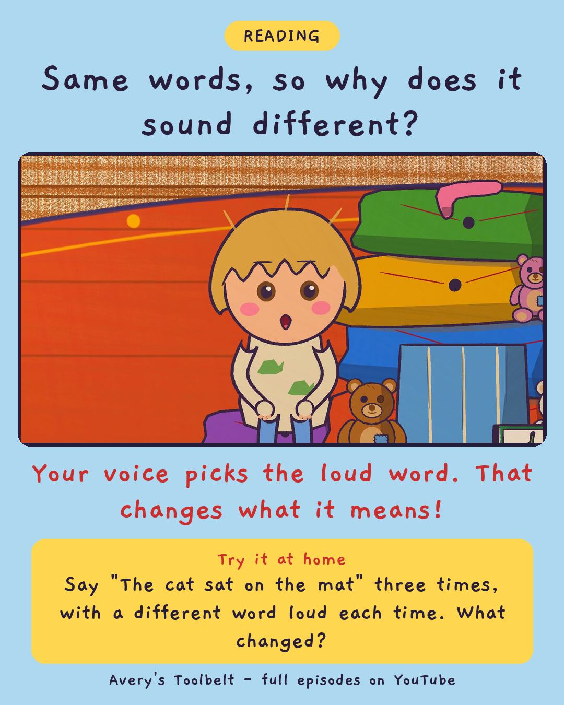

Out LoudReading Aloud: Where Do You Stop?
唸出來

Same words, so why does it sound different?
Your voice picks the loud word. That changes what it means!
Try it at home
Say "The cat sat on the mat" three times, with a different word loud each time. What changed?
Free printable coloring page (PDF) Watch the full episode on YouTubeAbout this episode, for grown-ups
Gus has a sentence. It lives in his cat book, and after three weeks of bedtime he knows it by heart - but he says it as one long word, faster every time: thecatsatonthematandwouldnotmove. Nobody can understand it. Not even him.
Avery can sound out cat and sat and mat, and not much more, but she can hear exactly what's wrong. Her first two tries at helping go badly - "You're doing it wrong," and "Do it slower" - and the book goes under a cushion. So she sits and thinks for a whole afternoon, and then asks Mom to read her a sentence, twice, in two different ways.
What children find out: the words on the page don't tell you where to stop or which word to say loud. Your voice does that - and it changes what the sentence means.
For grown-ups: an episode about a five-year-old teaching a four-year-old something she can only half do herself, and learning to do it without making him feel small.